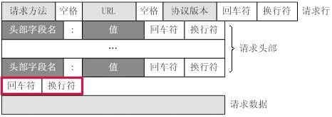

NanoHTTPD源码解析
前言
在微信 、UC 等 APP 中，无法通过scheme 或者 AppLiks 调起我们的 APP，所以想在APP 内部建立起一个 LocalHttpServer，监听某个端口，web 通过访问本地的这个端口，完成通信，调用起一些服务
在 github 上发现了 NanoHttpd 项目，它仅仅使用一个类，完成了 server 的搭建。它使用的是Socket BIO(阻塞IO)，一个客户端连接分发到一个线程的经典模型，而且具有良好的扩展性.
使用方法
使用比较简单。继承 'NanoHTTPD' ， 复写'serve()' , 在该函数内处理。调用 start() 启动服务 。stop() 关闭服务
源码解析
从调用的入口 start() 开始分析
/**
* Start the server.
*
* @throws IOException
* if the socket is in use.
*/
public void start() throws IOException {
//建立 ServerSocket ，并且 bind 对应的 host 和端口号
myServerSocket = new ServerSocket();
myServerSocket.bind((hostname != null) ? new InetSocketAddress(hostname, myPort)
: new InetSocketAddress(myPort));
//开启一个线程监听这个端口
myThread = new Thread(new Runnable() {
@Override
public void run() {
int requestCount = 0;
do {
try {
//阻塞方法，直到有 socket 链接
final Socket finalAccept = myServerSocket.accept();
++requestCount;
//register ，存入一个 set ，方便统一管理 。
registerConnection(finalAccept);
finalAccept.setSoTimeout(SOCKET_READ_TIMEOUT);
//从 socket 中拿到InputStream，客户端发送的数据都在这里
final InputStream inputStream = finalAccept.getInputStream();
final int finalRequestCount = requestCount;
//再开启一个线程单独处理这个 socket
asyncRunner.exec(new Runnable() {
@Override
public void run() {
Thread.currentThread().setName("NanoHttpd Request Processor (#" + finalRequestCount + ")");
OutputStream outputStream = null;
try {
outputStream = finalAccept.getOutputStream();
TempFileManager tempFileManager = tempFileManagerFactory.create();
//通过 inputStream ，outputStream 最终得到一个 HTTPSession
HTTPSession session = new HTTPSession(tempFileManager, inputStream, outputStream,
finalAccept.getInetAddress());
while (!finalAccept.isClosed()) {
//最终调用session.execute 来处理
session.execute();
}
} catch (Exception e) {
// When the socket is closed by the client,
// we throw our own SocketException
// to break the "keep alive" loop above.
if (!(e instanceof SocketException && "NanoHttpd Shutdown".equals(e.getMessage()))) {
e.printStackTrace();
}
} finally {
safeClose(outputStream);
safeClose(inputStream);
safeClose(finalAccept);
unRegisterConnection(finalAccept);
}
}
});
} catch (Throwable t) {
}
} while (!myServerSocket.isClosed());
}
});
myThread.setDaemon(true);
myThread.setName("NanoHttpd Main Listener");
myThread.start();
}
可以看到所有数据的处理都在HTTPSession,excute()中 ，接着看下 HTTPSession 数据结构。他是NanoHTTPD 的内部类
protected class HTTPSession implements IHTTPSession {
public static final int BUFSIZE = 8192;
private final TempFileManager tempFileManager;
private final OutputStream outputStream;
private PushbackInputStream inputStream;
private int splitbyte;
private int rlen;
private String uri;
private Method method;
private Map<String, String> parms;
private Map<String, String> headers;
private CookieHandler cookies;
private String queryParameterString;
....
实现了 IHTTPSession 这样一个借口
/**
* Handles one session, i.e. parses the HTTP request and returns the
* response.
*/
public interface IHTTPSession {
void execute() throws IOException;
Map<String, String> getParms();
Map<String, String> getHeaders();
/**
* @return the path part of the URL.
*/
String getUri();
String getQueryParameterString();
Method getMethod();
InputStream getInputStream();
CookieHandler getCookies();
/**
* Adds the files in the request body to the files map.
*
* @arg files - map to modify
*/
void parseBody(Map<String, String> files) throws IOException, ResponseException;
}
类似于getMethod() ，getInputStream()，getParms()，都提供了。
具体看下 execute方法
@Override
public void execute() throws IOException {
try {
// Read the first 8192 bytes.
// The full header should fit in here.
// Apache's default header limit is 8KB.
// Do NOT assume that a single read will get the entire header
// at once!
//header 最大为8k，所以一次读取8k 的大小
byte[] buf = new byte[BUFSIZE];
splitbyte = 0;
rlen = 0;
{
int read = -1;
try {
read = inputStream.read(buf, 0, BUFSIZE);
} catch (Exception e) {
safeClose(inputStream);
safeClose(outputStream);
throw new SocketException("NanoHttpd Shutdown");
}
if (read == -1) {
// socket was been closed
safeClose(inputStream);
safeClose(outputStream);
throw new SocketException("NanoHttpd Shutdown");
}
while (read > 0) {
rlen += read;
//找到 head 结束，也就是两个换行的位置，存入splitbyte ，后面解析的时候用到
splitbyte = findHeaderEnd(buf, rlen);
if (splitbyte > 0)
break;
read = inputStream.read(buf, rlen, BUFSIZE - rlen);
}
}
//为了避免 inputStream 被破坏，将读取的数据在回退到 inputStream 中
if (splitbyte < rlen) {
inputStream.unread(buf, splitbyte, rlen - splitbyte);
}
parms = new HashMap<String, String>();
if (null == headers) {
headers = new HashMap<String, String>();
}
// Create a BufferedReader for parsing the header.
BufferedReader hin = new BufferedReader(new InputStreamReader(new ByteArrayInputStream(buf, 0, rlen)));
// Decode the header into parms and header java properties
Map<String, String> pre = new HashMap<String, String>();
//把 header 中的参数 等解析出来
decodeHeader(hin, pre, parms, headers);
method = Method.lookup(pre.get("method"));
if (method == null) {
throw new ResponseException(Response.Status.BAD_REQUEST, "BAD REQUEST: Syntax error.");
}
uri = pre.get("uri");
cookies = new CookieHandler(headers);
// Ok, now do the serve()
//这里是回调，HTTPSession 本身实现了 IHTTPSession 接口
Response r = serve(this);
if (r == null) {
throw new ResponseException(Response.Status.INTERNAL_ERROR,
"SERVER INTERNAL ERROR: Serve() returned a null response.");
} else {
cookies.unloadQueue(r);
r.setRequestMethod(method);
r.send(outputStream);
}
} catch (SocketException e) {
// throw it out to close socket object (finalAccept)
throw e;
} catch (SocketTimeoutException ste) {
throw ste;
} catch (IOException ioe) {
Response r = new Response(Response.Status.INTERNAL_ERROR, MIME_PLAINTEXT,
"SERVER INTERNAL ERROR: IOException: " + ioe.getMessage());
r.send(outputStream);
safeClose(outputStream);
} catch (ResponseException re) {：
Response r = new Response(re.getStatus(), MIME_PLAINTEXT, re.getMessage());
r.send(outputStream);
safeClose(outputStream);
} finally {
tempFileManager.clear();
}
}
//解析 header
/**
* Decodes the sent headers and loads the data into Key/value pairs
*/
private void decodeHeader(BufferedReader in, Map<String, String> pre, Map<String, String> parms,
Map<String, String> headers) throws ResponseException {
try {
// Read the request line
//首先读取请求行 并解析
String inLine = in.readLine();
if (inLine == null) {
return;
}
//通过StringTokenizer 将首行安装空格分割
StringTokenizer st = new StringTokenizer(inLine);
if (!st.hasMoreTokens()) {
throw new ResponseException(Response.Status.BAD_REQUEST,
"BAD REQUEST: Syntax error. Usage: GET /example/file.html");
}
//根据下图的 http 结构可以看出。首先读取的是 methos
pre.put("method", st.nextToken());
if (!st.hasMoreTokens()) {
throw new ResponseException(Response.Status.BAD_REQUEST,
"BAD REQUEST: Missing URI. Usage: GET /example/file.html");
}
//其次是 url
String uri = st.nextToken();
// Decode parameters from the URI
int qmi = uri.indexOf('?');
if (qmi >= 0) {
decodeParms(uri.substring(qmi + 1), parms);
uri = decodePercent(uri.substring(0, qmi));
} else {
uri = decodePercent(uri);
}
// If there's another token, it's protocol version,
// followed by HTTP headers. Ignore version but parse headers.
// NOTE: this now forces header names lowercase since they are
// case insensitive and vary by client.
//解析请求头部，头部的参数是通过 ： 分割
if (st.hasMoreTokens()) {
String line = in.readLine();
while (line != null && line.trim().length() > 0) {
int p = line.indexOf(':');
if (p >= 0)
headers.put(line.substring(0, p).trim().toLowerCase(Locale.US), line.substring(p + 1)
.trim());
line = in.readLine();
}
}
pre.put("uri", uri);
} catch (IOException ioe) {
throw new ResponseException(Response.Status.INTERNAL_ERROR, "SERVER INTERNAL ERROR: IOException: "
+ ioe.getMessage(), ioe);
}
}

session.parseBody(files) ，是解析出请求数据用的 。
@Override
public void parseBody(Map<String, String> files) throws IOException, ResponseException {
RandomAccessFile randomAccessFile = null;
BufferedReader in = null;
try {
//通过 tempFileManager 得到一个 RandomAccessFile
randomAccessFile = getTmpBucket();
long size;
//如果 header 中有content-length ，那么 size 用这个。否则用之前找到 header 结束的位置来算
if (headers.containsKey("content-length")) {
size = Integer.parseInt(headers.get("content-length"));
} else if (splitbyte < rlen) {
size = rlen - splitbyte;
} else {
size = 0;
}
// Now read all the body and write it to f
//把 body 写入 tempfile 中
byte[] buf = new byte[512];
while (rlen >= 0 && size > 0) {
rlen = inputStream.read(buf, 0, (int) Math.min(size, 512));
size -= rlen;
if (rlen > 0) {
randomAccessFile.write(buf, 0, rlen);
}
}
// Get the raw body as a byte []
ByteBuffer fbuf = randomAccessFile.getChannel().map(FileChannel.MapMode.READ_ONLY, 0,
randomAccessFile.length());
randomAccessFile.seek(0);
// Create a BufferedReader for easily reading it as string.
InputStream bin = new FileInputStream(randomAccessFile.getFD());
in = new BufferedReader(new InputStreamReader(bin));
// If the method is POST, there may be parameters
// in data section, too, read it:
if (Method.POST.equals(method)) {
String contentType = "";
String contentTypeHeader = headers.get("content-type");
StringTokenizer st = null;
if (contentTypeHeader != null) {
st = new StringTokenizer(contentTypeHeader, ",; ");
if (st.hasMoreTokens()) {
contentType = st.nextToken();
}
}
if ("multipart/form-data".equalsIgnoreCase(contentType)) {
// Handle multipart/form-data
if (!st.hasMoreTokens()) {
throw new ResponseException(Response.Status.BAD_REQUEST,
"BAD REQUEST: Content type is multipart/form-data but boundary missing. Usage: GET /example/file.html");
}
String boundaryStartString = "boundary=";
int boundaryContentStart = contentTypeHeader.indexOf(boundaryStartString)
+ boundaryStartString.length();
String boundary = contentTypeHeader.substring(boundaryContentStart, contentTypeHeader.length());
if (boundary.startsWith("\"") && boundary.endsWith("\"")) {
boundary = boundary.substring(1, boundary.length() - 1);
}
decodeMultipartData(boundary, fbuf, in, parms, files);
} else {
String postLine = "";
StringBuilder postLineBuffer = new StringBuilder();
char pbuf[] = new char[512];
int read = in.read(pbuf);
while (read >= 0 && !postLine.endsWith("\r\n")) {
postLine = String.valueOf(pbuf, 0, read);
postLineBuffer.append(postLine);
read = in.read(pbuf);
}
postLine = postLineBuffer.toString().trim();
// Handle application/x-www-form-urlencoded
if ("application/x-www-form-urlencoded".equalsIgnoreCase(contentType)) {
decodeParms(postLine, parms);
} else if (postLine.length() != 0) {
// Special case for raw POST data => create a
// special files entry "postData" with raw content
// data
files.put("postData", postLine);
}
}
} else if (Method.PUT.equals(method)) {
//最终 file 放在 这个 map 里
files.put("content", saveTmpFile(fbuf, 0, fbuf.limit()));
}
} finally {
safeClose(randomAccessFile);
safeClose(in);
}
}
参考
http://shensy.iteye.com/blog/1880381
http://www.voidcn.com/blog/mrtitan/article/p-3280792.html